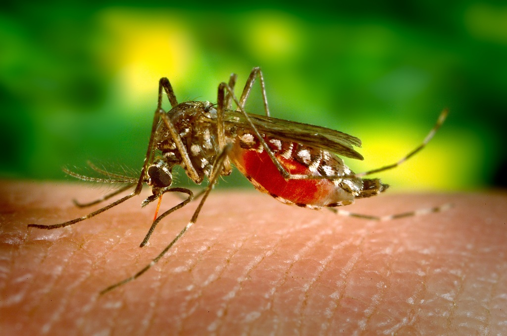

Le paludisme est l’une des plus anciennes maladies. Elle existait même au temps des pharaons. Dans les pays anglophones, le paludisme s'appelle malaria. Malaria est un mot italien qui veut dire « mauvais air » car les premiers cas de paludisme ont été trouvés à côté de marais.
Avec un parasite
Le paludisme est une maladie due à un parasite. Ce parasite va se développer et se multiplier dans le corps humain en particulier dans les globules rouges jusqu'à parfois entraîner la mort. Il est donc important de bien connaître ce parasite pour mieux s'en protéger et mieux se soigner quand on est malade.
Plusieurs parasites différents
Le parasite responsable du paludisme s'appelle Plasmodium. Il est très petit et on ne peut le voir qu'avec un microscope. En fait, il existe plusieurs types de parasites : Plasmodium falciparum, Plasmodium vivax, Plasmodium ovale, Plasmodium malariae et Plasmodium knowlesi. Tous ces noms un peu compliqués correspondent à des types de paludismes différents, qu'on trouve dans des endroits différents du monde (en Asie, en Afrique et aussi en Amérique du Sud) et qu'on soigne parfois différemment.
Au Congo, c'est surtout le parasite Plasmodium falciparum qui est responsable du paludisme.
Voici une photo du parasite observé au microscope. Le parasite est au centre de l'image. Il a une forme très allongée. Il a été coloré en violet pour qu'on puisse mieux le voir sur la photo mais en fait il n'a pas de couleur.
Comment devient-on malade ?
Le moustique anophèle
Le paludisme s'attrape par une piqûre de moustique, mais pas n'importe quel moustique, seulement les femelles de l'espèce Anophèle. En effet, la femelle moustique anophèle pique pour nourrir ses oeufs avec le sang humain.
D'abord dans le foie
Quand ces moustiques piquent, des parasites présents dans la salive du moustique passent très rapidement dans le sang pour aller s’installer d’abord dans le foie de la personne piquée. Lorsque le parasite se trouve dans le foie, l'individu n'a pas de symptôme de la maladie et ne se rend compte de rien. Habituellement, les symptômes du paludisme causés par le parasite P. falciparum (celui qu'on trouve au Congo) apparaissent 6 à 14 jours après l'infection lorsque les parasites quittent le foie pour aller dans le sang.
Puis dans le sang
Dans le sang, les parasites vont attaquer les globules rouges. Cela provoque l'apparition des symptômes de l'infection du paludisme: fièvre, anémie, vomissements, frissons et parfois convulsions. La plupart du temps, les symptômes commencent avec une froideur qui suit par la rigueur et de la fièvre pendant 4 à 6 heures. Quand les premiers globules détruits par les parasites sont éliminés du sang et que les parasites envahissent de nouveaux globules rouges, la fièvre diminue visiblement. Ce sont les cycles bien connus de la fièvre qui caractérisent le paludisme. Si le paludisme n’est pas traité, ce processus va progressivement entraîner le coma et la mort surtout chez les enfants et les femmes enceintes.

Moustique en train de piquer. C'est à cet instant que la femelle anophèle peut transmettre le parasite.
Où trouve-t-on le paludisme ?
Dans les pays tropicaux
Le paludisme est une maladie qui se trouve surtout dans les pays tropicaux, où le climat chaud et humide permet aux moustiques de bien se développer.
Plusieurs millions de cas
En 2014, 246 millions de personnes ont eu le paludisme dans le monde entier, et 655 000 personnes en sont mortes. L'Afrique subsaharienne est particulièrement touchée par cette épidémie puisque 9 décès sur 10 dus au paludisme se trouvent dans cette région du monde. Les jeunes enfants et les femmes enceintes sont les plus fragiles.
Au Congo
Au Congo, le paludisme est le troisième motif de consultation dans les centres de santé.